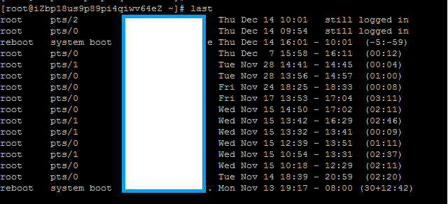

今天早上某个用户的服务器突然打不开，让我查找原因。我登陆ssh一看发现docker进程未启动，于是我启动了，之后发现一切都恢复正常。因此确定是服务器被人为重启了，需要确定重启的时间。
首先我使用了last命令，查看到的结果如下：

一看reboot时间居然是14号下午 4点的记录，现在的时间才上午，发生在未来的事情明显是不可能的。所以last的结果不可信。我又换了一个方法，这次是查看系统开机到现在运行的时间：
前一个数字是系统当前已运行的秒数。换算之后大约是2个小时，结合当前时间是10点多，所以推算出重启的时间大约是8点多。
相关文档
暂无
随便看看